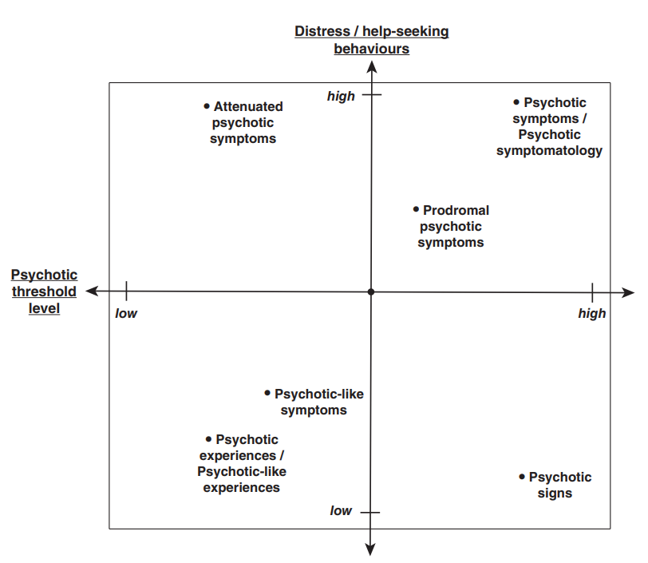
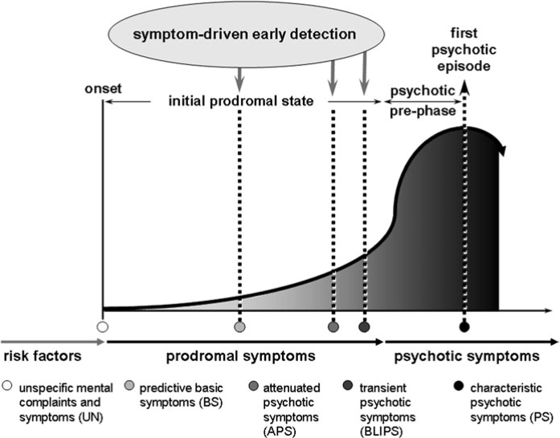
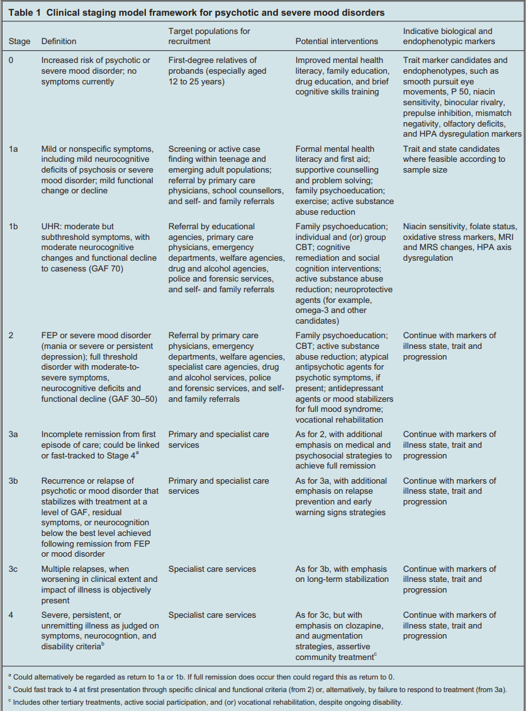
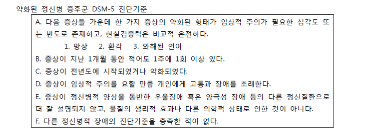
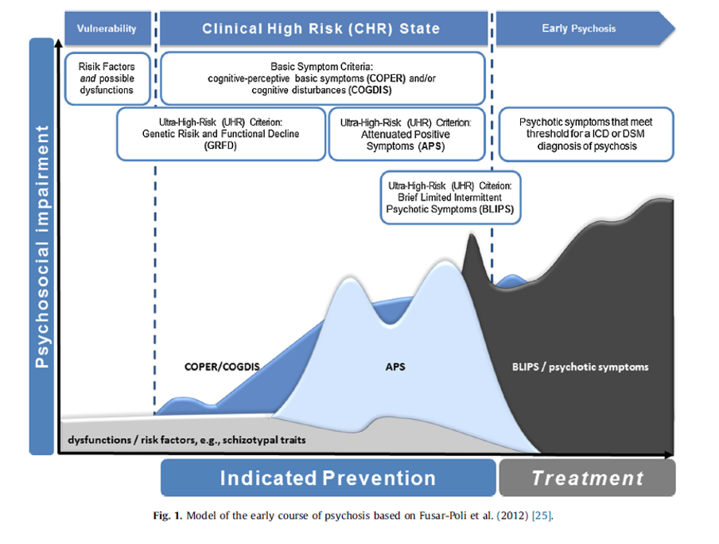

40 조기 정신병과 전구기
40.1 조기 정신병
40.1.1 개념적 혼란
조기 정신병(early psychosis)의 정확한 정의에 대해서는 학자마다 이견이 있지만, 일반적으로는 향후 조현병이 발병될 환자에 있어서 아직 뚜렷한 정신병적 증상이 나타나기 전에 전구 증상만을 보이는 시기를 말한다.1 이 개념은 이미 1930년대부터 사용되어 왔지만2, 신경발달학적 가설이 널리 받아들여지고 되고 정신질환의 예방적 치료에 대한 관심이 커지면서 점점 더 주목을 받게 되었다.
1 조기 정신병(early psychosis)과 가장 혼돈되는 용어가 조기 발병 정신병(early-onset psychosis, EP)이다. 전자는 전구기 개념인데 비해, 후자는 18세 이전에 발병한 조현병 등 정신병 사례를 의미한다. 이와 관련하여 13세 이전에 발병했다면 극조기 발병 정신병(very early-onset psychosis, VEOP)라고 한다.
2 “Early psychosis”라는 용어는 1938년에 Meyer-Gross에 의해 처음 사용되기 시작하였으며, 뚜렷한 정신병적 증상에 선행하는 자극과민성, 집중력 곤란, 건강염려, 기분 저하, 나태 등 비특이적 증상들을 의미하였다. 당시는 인슐린이나 약물에 의한 쇼크 치료가 처음 시작되던 시기로, 진단과 치료가 조기에 이루어진 환자들이 비교적 예후가 좋다는 것이 관찰되었다. 조기 진단이 점점 강조되었고, 어떻게든 빨리 환자를 찾아내고 싶었던 의사들은 조기 정신병이라는 조현병의 단계가 따로 있다는 식으로 생각하게 되었다.[1]
조기 정신병은 조기 진단 및 신속한 치료적 개입과 따로 떼서 생각할 수 없다. 조현병 발병 후 첫 5년 이내에 대부분의 사회적, 심리적, 생물학적 황폐화가 일어나기 때문에[2], 전구기를 포함하여 발병 후 5년까지를 치료의 결정적 시기(critical period)로 본다.[3] 조기 정신병 개념은 이 시기를 놓치지 않기 위한 노력의 일환으로 등장한 셈이다.
따라서 이 개념의 존재 의의는 향후 조현병으로 발전할 환자를 어떻게 하면 미리 찾아낼 수 있는가에 달려있는데, 그 위험도를 어떤 기준으로 판단하느냐에 따라 용어와 개념의 정의가 달라진다. 지금까지 조기 정신병은 “전구기(prodromal period)”, “위험한 정신상태 (at risk mental state)”[4], “초고위험 (high and ultra-high risk)”[5], “임상적 고위험 (clinical high risk)”[6], “기본증상(basic symptom)”[7], “정신병 위험 증후군 (psychosis risk syndrome)”[8] 등 다양한 용어로 불리워왔으며, 이들 용어들은 개념적 구분없이 혼용되어 왔다. 이런 혼란을 해결하기 위해 DSM-5에서는 “약화된 정신병 증후군 (attenuated psychosis syndrome)”이라는 새로운 범주를 제안하였다.[9] 이를 구성하는 소위 약화된 정신병 증상 (attenuated psychotic symptoms, APS)이란 정신병적 증상이긴 하지만 정도가 덜 하고 심각한 장해나 고통을 유발하지 않는 경험으로 지역사회 내 일반인 집단에도 존재하지만, 정신병 발병 위험도가 높은 집단에서 빈번하게 관찰된다. 다른 말로는 임상역치하 정신병적 경험 (subclinical psychotic experiences)이라고도 한다. 이들 다양한 용어의 개념적 차이를 그림 40.1 에 요약하였다.[10]

조기 정신병에서 말하는 정신병의 범위는 조현병 외에도 조현양상장애, 조현정동장애, 조현형 성격장애, 망상장애, 단기정신병적장애 등을 포함하며, 때로는 정신병적 증상을 동반한 기분 장애도 아우른다. 발병 한 이후에는 증상 및 기타 임상 양상을 통해 감별진단이 가능하지만, 조기 혹은 초발인 경우에는 감별이 쉽지 않다. 초발 환자에게 내려진 진단이 나중에 바뀌는 경우가 드물지 않다. Subramamian 등[11]은 초발 때의 진단과 처음 치료를 받은 후 2년이 지나 재진단한 결과를 비교하였는데, 두 진단이 동일했던 경우는 조현병이 87.0%, 정동 정신병(affective psychosis)이 54.5% 였다.
따라서 임상가들은 조기 조현병(early schizophrenia)이라는 용어보다는 조기 정신병(early psychosis)이라는 용어를 선호한다. 얼마든지 진단이 바뀔 여지가 있을 뿐 아니라, “조현병”이라는 용어가 불필요하게 환자와 가족에게 상처를 줄 수 있기 때문이다. 게다가 조현병에 대한 치료진의 선입견때문에 지나치게 공격적인 치료를 하거나 비관적 전망을 갖게 될 수도 있다.[4]
40.2 전구기의 개념 및 정의
조기 정신병은 병전 단계(premorbid stage)를 포함하기도 하기 때문에 좀더 포괄적인 개념이긴 하지만, 의사들에게 좀더 친숙한 개념은 전구기일 것이다. 의학에서 전구기란 병이 발생하긴 했지만, 아직 본격적인 증상이 나타나기 이전을 가리킨다. 따라서 발병 가능성만을 타진하는 고위험 시기와는 맥락을 달리한다. 전구기란 또한 아직 특징적인 증상이 출현하지 않아 진단을 내리기 어렵지만, 비특이적 증상들이 있어서 특정 진단이 상당히 의심될 때를 가리키고 한다. 따라서 해당 시기가 전구기였는지 여부는, 일단 확실한 진단이 내려진 후에나 후향적으로 평가될 수 있다.[12] 그런데 정신질환에서는 언제가 전구기였는지를 결정하기가 여간 어려운 것이 아니다. 환자들의 기억은 불확실하며, 현재의 상황때문에 기억이 변조되는 경우가 흔하다. 게다가 병식이 없는 환자라면 발병 전에도 역시 자신은 아무런 문제가 없었다고 주장할 것이다. 이런 경우 전구기의 판단은 주위 사람들의 관찰에 의지할 수 밖에 없다. 그러나 주관적 경험을 잘 묘사하는 환자라면, 겉으로 증상이 드러나기 훨씬 전부터 내적인 변화가 있었다는 것을 진술할 것이다. 설령 겉으로 드러나는 증상이 아니라 명백한 기능 저하를 기점으로 전구기를 정한다 해도, 내적 이상의 시작과 기능 저하가 시작되는 시점 사이의 시간 차이는 상당할 것이다. 따라서 전구기의 시작 시점을 명확히 꼬집어 내기란 불가능에 가깝다.
전구기는 대략 두 가지 관점에서 이해되는데, 1) 정신병의 초기 형태라는 개념과 2) 정신병에 대한 취약성이 증가되어 있는 상태라는 개념이다. 만약 전자의 개념이라면 전구기에 접어든 환자는 정의상 이미 정신병 환자이다. 이에 비해 후자의 개념이라면, 전구기 환자의 일부만 발병할 것이다. 예를 들어 Yung and McGorry (1996)이 전구기를 ’위험한 정신상태 (at-risk mental states, ARMS)’라 칭한 것은 후자의 개념을 적용한 것이다. 그러나 일반적으로 의학에서 말하는 전구기는 전자의 개념으로 쓰이며, 전구기에 접어들었다는 것은 이미 병이 시작되었다는 뜻으로 받아들여진다.

독일의 German Research Network on Schizophrenia (GRNS)[14]는 전구기를 초기 전구기(early initial prodromal state, EIPS)와 후기 전구기 (late initial prodromal state, LIPS)으로 나누어 이러한 혼란을 바로잡으려 하였다 (그림 40.2). 초기 전구기는 약화된 정신병 증상(APS)보다는 사고간섭, 강박과 유사한 사고의 보속증, 사고의 압박 또는 차단, 수용언어 장애, 불안정한 관계사고, 비현실감 등과 같은 소위 기본증상(basic symptoms, BS)이 주로 나타난다. 반면 후기 전구기는 관계사고, 비정상적 지각 경험, 편집성 사고/불신, 마술적 사고, 괴상한 말과 같은 APS 혹은 일시적으로 발생했다가 저절로 소실되는 정신병적 증상(Brief Limited Intermittent Psychotic Symptoms, BLIPS)을 포함한다. 요약하면 전자는 취약성을, 후자는 병의 시작을 의미하는 것이다.[13]
호주 연구진이 제시한 정신병의 임상적 병기 모델(Clinical staging model) 역시 개념적으로 흡사하다 (___참조). 증상은 없으나 정신병적 장애의 위험이 고조된 0기와 완연한 정신병이 발현된 2기 사이에 두 단계가 존재한다. 1a기에는 인지 결함을 포함하는 가볍거나 비특이적 정신병적 증상과 가벼운 기능 저하가 나타나고, 1b기에는 정신병 삽화 기준에는 미치지 못하는 중등도 수준의 증상(APS)이 드러난다. 호주의 조기 정신병 사업의 핵심은 1b기를 빨리 찾아내어 중재함으로써 발병을 완화, 연기 또는 억제하는 것이다.[15,16]

40.3 전구기 연구의 역사
Kraepelin은 조발성 치매에 대한 기술에서 “정신병은 보통 전신 권태감, 불쾌감, 두통, 귀에 소음, 어지러움, 불면, 신체 각 부분에서의 다양한 불쾌한 느낌, 불면, 식욕 저하와 같은 증상으로 시작한다. 환자는 소심해지고 위축되며 풀이 죽고 불안해지며 일을 그만두게 되고 특별히 건강염려증적 내용의 모호한 말을 하게 된다.”라고 언급하였다. 비슷한 시기 유럽의 다른 학자들도 “depressive prodromes” 또는 “prodromal pseudoneurasthenia”와 같은 용어를 통해 비정신병적 증상들을 묘사하려 하였다. 블로일러는 단순형 조현병(simple schizophrenia)(1장 1-6절 참조 article-01-01.html#bleuler)이란 개념으로 비슷한 상황을 묘사하여 하였다.
미국에서는 Harry Stack Sullivan이 조기 조현병의 정신역동적 또는 정신분석적 해석을 하였고[17], 1941년 Zilboorg는 “ambulatory schizophrenia”, 1949년에 Hoch와 Polatin은 “pseudoneurotic schizophrenia”라는 용어를 도입했다. 이 밖에도 “latent,” “masked,” “mild,” “simple” 또는 “sluggish” schizophrenia와 같은 명칭 들이 혼란스럽게 등장하였다.[1]
당시만 해도 이들 다양한 용어들이 조현병과 별개의 질환을 의미하는 것인지, 조현병으로 이어지는 발병 과정을 묘사하는 것인지 명확하지 않았다. 1950년대 말에 이르러 Conrad는 다양한 “조현병의 시작 단계”에 대한 분석이 가능하며, 신경심리학적 증상의 진행 법칙을 밝힐 수 있을 것이라 내다보았다.[18] McGhie와 Chapman이 “Observations on specific disorders of attention and perception in early schizophrenia”[19]과 “The early symptoms of schizophrenia”[20] 라는 논문을 잇달아 출판하면서, 실증적, 나아가 생물학적 관점에서의 조기 정신병 연구가 시작되었다.
독일에서는 1962년 Gerd Huber가 훗날 “Bonn Scale for the Assessment of Basic Symptoms (BSAB)”로 불리는 “Heidelberg Checklist of Basic Symptoms”을 고안했는데 조현병이 발병할 위험을 미리 평가하는 도구로 이용되었다.[21–23] 이들은 자신들의 이론을 입증하기 위해, “Cologne Early Recognition-Study” (CER)이라는 이름으로 조현병 환자들의 과거 병력 및 생활상을 수집하는 후향적 연구를 시도하였다.[7,24] 이들의 연구에서의 쟁점은 기본증상(Basic Symptom)이 상태표지자(state marker)인지 특성표지자(trait marker)인지, 그리고 기본증상이 조현병에 특이한 것인지였다. 만약 기본증상이 선천적 취약성(vulnerability)을 나타내는 것이라면, 전구기의 시작시점을 논하는 것은 의미가 없다. 또한 이러한 취약성이 조현병에 특이적인 것도 아니라면, 조현병 발병을 예측하는데 별 도움이 되지 못한다. 그럼에도 불구하고 이들은 “BSAB”를 이용하여 미묘한 정신병리를 찾아냄으로써, 조현병에 특이한 선행변화를 찾아내고 조기 발견/중재를 시도하여 하였다.[7]
신뢰도를 무엇보다 중요시한 DSM–III에서는 객관적 진단기준을 적용할 수 없는 개념이나 이론에 대한 기술이 배제되었다. 따라서 이전까지 우후죽순 겪으로 등장하였던 다양한 진단명들은 일거에 공식적 논의에서 배제되었으며 자연히 전구기에 대한 연구도 동력을 잃었다. 그 대신 조현병의 약화된 형태로 조현성 인격장애(schizoid personality disorder)와 조현양상 장애(schizotypal disorder)가 새롭게 등장하였다. 당시 정신과 의사들은 전자는 지속적인 인격의 특성을 의미하는 것으로 조현병 발병과는 별 상관 없는 것으로 받아들였으나, 후자의 경우에는 추적 관찰하다보면 결국 조현병으로 발병하는 것으로 받아들이고 있었다.
20세기 말에 들어서자 전구기에 대한 연구는 폭발적으로 늘어났다. 1998년에는 국제 조기 정신병 협회 International Early Psychosis Association (IEPA)가 설립되었고 2005년에는 IEPA의 조기 정신병 임상 지침서가 발표되었으며, 2007년에는 기관지인 “Early Intervention in Psychiatry”의 간행이 시작되었다. DSM-5 역시 이러한 시대적 조류를 무시할 수 없었는지, “약화된 정신병 증후군”을 향후 연구가 필요한 진단으로 도입하고 있다.
40.4 전구기의 진단기준
40.4.1 초고위험 진단 기준
호주 연구진이 고안하여 세계적으로 널리 사용되고 있는 초고위험 진단 기준 (Ultra-High Risk Criteria, UHR)은 다음 세 가지 증후군 중 하나 이상에 해당할 때로 정의된다. 즉 1) 약화된 정신병적 증상 (APS), 2) 단기간 나타났다 자연 소실되는 정신병 증상 (BLIPS), 그리고 3) 기질적 취약성이 있는 사람이 최근 정신사회적 기능의 현저한 저하를 보이는 경우(Genetic Risk and Deterioration Syndrome, GRD)를 말한다. 이런 기본적 개념을 바탕으로 UHR를 평가하고 진단하기 위한 여러가지 도구가 개발되었다. 뒤에 언급되겠지만, UHR 기준에 의거하여 실제 환자를 평가하기 위한 다양한 진단도구가 개발되었다.
40.4.2 기본증상 진단기준
외적으로 드러나는 증상 및 기능저하를 중시하는 UHR에 비해, 기본증상(Basic Symptom, BS)은 지각, 사고과정, 언어, 주의집중과 같은 다양한 영역에서 “주관적으로 경험하는” 증상을 가리킨다. 이를 경험하는 환자는 매우 낯설고 불편하다고 느끼며, 자신의 사고와 감정에 뭔가 이상이 생겼다는 병식을 지닌다.[25] 이는 좀더 미묘하고 언어로 표현하기 어려운 변화를 가리키고 있기 때문에, 자신의 정신상태에 대해 성찰할 수 있는 능력이 있어야만 제대로 보고할 수 있다. 또한 비록 민감도(sensitivity)는 높을 수 있어도 특이도(specificity)는 매우 낮은 편이다.
기본증상 개념을 지지하는 학자들은 13개의 기본 증상을 cognitive‐perceptive basic symptoms (COPER), 과 cognitive disturbances (COGDIS)라는 두 개의 범주로 나누었다.(표 40.1) 각 범주는 9개의 증상으로 구성되는데, 이중 1주에 한번 이상 발현하는 증상이 2개 이상이 되면, COPER (+) 혹은 COGDIS (+)로 진단한다.[26]
| Symptom | COGDIS | COPER |
|---|---|---|
| Thought interference | Yes | Yes |
| Thought perseveration | No | Yes |
| Thought pressure | Yes | Yes |
| Thought blockages | Yes | Yes |
| Disturbance of receptive language | Yes | Yes |
| Disturbance of expressive language | Yes | No |
| Disturbances of abstract thinking | Yes | No |
| Inability to divide attention | Yes | No |
| Captivation of attention by details of the visual field | Yes | No |
| Decreased ability to discriminate between perception and ideas, true memories and fantasies | No | Yes |
| Unstable ideas of reference with insight | Yes | Yes |
| Derealization | No | Yes |
| Visual or acoustic perceptual disturbances with insight | No | Yes |
UHR과 BS 기준은 서로 보완적으로 이용될 수 있다. BS가 더 이른 전구기 시기를 반영한다면, UHR은 좀더 늦은 전구기를 반영하는 것으로 보인다. 따라서 임상에서 정신병 고위험군을 평가할 때는 두 진단기준을 반영하는 각각의 척도를 함께 사용한다.[27] 표 40.2 에는 초고위험 진단기준 및 기본증상 진단기준에 의거하여 정신병고위험군을 가려내는 진단도구 들을 열거하였다.
| Ultra-High Risk Criteria | Basic Symptom Criteria |
|---|---|
| Comprehensive Assessment of At-Risk Mental State (CAARMS) | Bonn Scale for the Assessment of Basic Symptoms (BSABS) |
| Early Recognition Inventory for the Retrospective Assessment of the Onset of Schizophrenia (ERIraos) | The Schizophrenia Proneness Instrument, Adult version (SPI-A) |
| Basel Screening Instrument for Psychosis (BSIP) | Schizophrenia Proneness Instrument, Child and Youth version (SPI-CY) |
| Structured Interview for Prodromal Symptoms (SIPS) | |
| Prodromal Questionnaire (PQ) |
40.4.3 DSM에서의 전구기 진단기준
DSM-5에서 전구기 개념은 약화된 정신병 증후군(APS)이라는 명칭 하에 제 Ⅲ 부 “향후 연구를 위한 병태(condition for further study)”에서 언급도었다. DSM-5 개정 초기에는 APS를 엄연한 진단명으로 넣어야 한다는 주장도 있었으나, APS에 해당한다고 해서 모두 정신병으로 이행하는 것이 아니며, 진단의 신뢰도도 낮은 편이기 때문에 결국 제 Ⅲ 부에 포함되는 것으로 타협을 이루었다. APS를 둘러싼 논란은 전구기를 병으로 볼 것이냐, 병으로 이행하는 중간단계로 볼 것이냐는 해묵은 논란과 연관되어 있다. DSM-5 정신병적 장애 위원장인 Carpenter[28]는 APS는 조현병의 전구기로서가 아니라 그 자체가 엄연한 진단명으로 인정되어야 한다고 주장했지만, APS로 진단되면 결국 조현병과 마찬가지의 사회적 낙인이 찍히게 되며 정상과 질병의 범위에서 후자의 범위를 넓힌 것에 지나지 않는다는 비판이 거샜다. 따라서 APS가 품은 문제는 결국 정신질환의 진단이 안고 있는 질환 경계의 “중첩” 문제와 정상과 비정상의 “경계” 문제에 수렴된다.[29] APS를 ICD-11에도 등재시키려는 움직임이 있었으나, 마찬가지 맥락에서 ICD-11에 포함시키기 않는 것으로 결정되었다.
DSM-5에 처음 포함될 때만 해도 “약화된 정신병 증후군”은 경한 망상, 환각과 혼란된 말 등을 보일 수 있으나, 뚜렷한 정신병적 삽화라 하기 어렵고, 현실검증력은 상대적으로 온전히 유지되는 상태를 의미하였다.(그림 40.3 )[30] 그러나 망상이 있으면서 현실검증력이 온전하다는 표현은 논리적으로 모순된다고 판단하여, 2022년 발간된 DSM-5-TR에서는 현실검증력에 대한 문구가 삭제되었다. 최근에는 다시 약화된 정신병 증후군을 본문에 삽입해야 된다는 주장이 제기되고 있다.[31]

3 초발 정신증 임상 평가에 관한 진료지침서 (대한조현병학회 임상진료지침 개발위원회 한국조기정신증연구, Korea Early Psychosis Study)
40.4.4 위양성과 위음성
전구기를 그 자체로 인정하기보다는 자꾸만, 향후 발병여부를 예측하는 지표로 사용하다보니 위양성과 위음성의 문제를 불러일으키게 되었다. 환자가 전구기에 놓여있다고 혹은 정신병 고위험군이라고 진단되었으나, 시간이 흘러도 정신병이 발병하지 않는 사례를 위양성이라고 한다. 최근의 메타 분석에 따르면 위양성의 비율은 6개월 추적 시 82%, 1년후 78%, 2년후 71%, 3년 후 64% 정도라고 보고되었다.[32] 10년간 장기 추적 시 65.1%라는 보고도 있다.[33] 역으로 고위험군이 아니라고 걸러졌지만 추후에 정신병이 발병했다면 위음성이라 할 수 있다. 그러나 위음성에 대한 데이터는 거의 없는 편이다. 위양성이 문제되는 것은 과잉 진단과 치료의 위험 때문이다. 아무리 아니라고 부정해도, 정신병 고위험군으로 진단되는 것은 본인과 가족에게 상처이자 사회적 낙인이다. 치료를 하지 않는다해도 상처가 남을텐데, 게다가 예방한다면서 항정신병 약물 치료라도 강행하면 이득보다 손실이 더 클 수 있다. 이 때문에 학자들은 평가도구에서 얻어진 점수 이외에도 다양한 진단 지표를 이용하여 보다 정확한 예측 모델을 만들기 위해 애쓰고 있다.[34]
40.5 전구기의 경과
Cannon 등[35]의 문헌 고찰에 따르면 초고위험군의 30%–35%가 1-2년 내에 정신병으로 이행한다. 이에 반해 기본증상(BS)을 기준으로 고위험군으로 분류된 96명을 8년간 추적 조사한 결과 58%에서 일급증상이 나타났다.[21] 주관적 경험을 기준으로 하였을 때 좀더 특이도가 높다는 것을 엿볼 수 있다. 4,000명 이상의 임상적 고위험군의 정신병 이행 여부를 메타 분석했을 때, 2년 추적까지는 UHR 기준과 BS의 COGDIS 기준의 예측력이 엇비슷했으나 이후에는 COGDIS 기준이 더 높았다.[36] UHR로 선별도를 높이고, BS를 통해 특이도를 높이기 위해 이후 연구에서는 양쪽 기준을 동시에 사용하는 경우가 늘어났다.[37]
최근에 이루어진 메타 분석에 따르면, 소위 임상적 고위험군은 1년 후 16.9~20%, 2년 후 7~21%, 6년 후 22.7~23.3%가 정신병으로 전환되었다. 6년이 지나도 아직 정신병이 발병하지 않은 환자를 따져보았을 때, 전체의 36%는 위험군 기준에서 벗어났고, 40%는 여전히 기준을 충족시키고 있었다.[38] CHR에서 정신병이 발병한 경우는 조현병 스펙트럼장애가 정동 정신병보다 훨씬 많았다.[39]
고위험군에서 정신병으로 이행하면서 막연하고, 강도가 약했던 증상이 좀더 구체화되면서 강도와 빈도가 증가한다. 또한 새로운 증상이 출현하면서 증상의 개수도 늘어나는데, 이러한 변화가 임박한 정신병 발병을 예측하는데 도움이 될 수 있을 것이다.[40]
Carpenter[28]가 지적한 것처럼 고위험군 혹은 APS는 그 자체로서 독립적인 진단명이 될 수도 있다. 그럼에도 불구하고, 현재의 문헌은 이를 과도기 혹은 이행기로만 이해하고 있다. 차후에 정신병으로 전환되지 않는다고 해서 약화된 정신병적 증상을 겪고 있는 환자의 고통이 줄어드는 것은 아니다. 미래의 정신병 발병을 막는 것 뿐만 아니라, 그 자체로서 고위험군은 치료의 대상이 될 수 있다.[41]

40.6 전구기의 비약물적 치료
영국의 NICE 진료 지침을 비롯한 대부분의 치료 가이드라인은 일단 정신병 고위험군이 의심되면, 지체없이 전문기관에서 평가를 받고 공식적으로 고위험군이라고 판정되면 인지치료 혹은 가족치료를 실시할 것을 권장하고 있다. 다시 말하여 조현병이 확인되어야 개입이 시작되는 것이 아니라는 뜻이다.(그림 40.4) 여기에는 증상의 완화뿐 아니라, 발병의 징후를 감지하기 위한 요령과 주안점을 교육하는 내용이 포함된다. 이후 최대 3년간 정식 평가 도구를 사용하여 추적 관찰할 것이 권장된다. 고위험군을 평가하는 것은 보다 전문적이고 특화된 훈련이 필요하므로, 일반 평가자보다 더욱 경험많은 전문가에게 평가받을 것을 권하고 있다.
미국과 캐나다 정신의학회에서는 정신병 발병 위험이 높은 상태일 경우 주의 깊은 평가와 잦은 추적 관찰을 요구한다. German Association for Psychiatry, Psychotherapy, and Neurology에서는 고위험군을 대상으로 돌봄과 추적을 지속하고 질환에 해당하는 증상이 있으면 CBT와 사회요법을 제공하고 정신병 증상이 발현하면 항정신병약물을 사용하도록 권고하고 있다.[39]
만약 임상적 고위험군으로 판정되었다면 발병의 징조를 찾아내고, 발병을 재촉할 수 있는 상태를 그때마다 신속히 해결해야 한다. 대표적인 것이 약물 남용인데, 약물 남용은 점증하는 정신병적 경험에 대한 환자의 적응일 수도 있고, 발병을 재촉하는 유발인자가 될 수도 있다. 정신병적 증상이 뚜렷해지기 전까지는 약물치료를 삼가는 것이 원칙이기 때문에, 정신치료, 인지치료의 역할이 강조된다. 환자 및 가족과의 지지적인 관계 형성, 직면하고 있는 문제에 대한 이해와 해결 방법의 모색, 환경이나 대인관계에서의 스트레스의 감소, 강점과 회복탄력성 강화, 학업·직업 문제의 정리와 목표의 재설정, 병존 질환 (불안, 우울증, 자살 충동, 중독)에 대한 대응 등을 들 수 있다.[28]
40.7 전구기의 약물 치료
항정신병 약물은 그 자체로 적지 않은 부작용을 갖고 있으며, 비정형 약물이라 할 지라도 체중 증가등 대사성 부작용때문에 나이 어린 환자들에게 일률적으로 사용되지는 않는다. 오히려 불안, 우울 등 비정신병적 증상을 조절함으로써 발병 위험을 낮출 수도 있기 때문에 항우울제, 항불안제, 기분조절제가 더 유용하게 사용될 수도 있다. 어떤 약물이 발병을 늦추는데 효과적이라고 판정할만한 근거는 매우 부족한데, 왜냐하면 특정 약물을 쓴 환자가 발병하지 않았다 할 지라도 애초에 위양성이었을 비율이 매우 높기 때문이다. 그러나 동시에 약물치료의 효과를 발병 억제 여부에서만 찾으려하는 것도 적절하지 않다. 예방을 떠나 현재 환자의 정신상태가 약물치료를 요한다면 적극 사용해야 할 것이다.
항우울제는 단독으로 사용되기도 하고, 기분조절제와 함께 병용되기도 한다. Cornblatt 등[42]은 항우울제가 스트레스 대처 기전에 직접 영향을 주어 조현병의 근본적인 취약성을 감소시킬 수 있다고 보았다. Fusar-Poli 등[43]은 항우울제+인지치료를 병용한 고위험군이 항정신병 약물 + 인지치료 병용군보다 정신병으로의 전환율이 낮았다고 보고하였다. 애초에 항우울제, 항정신병 약물 투여 결정이 무작위로 이루어진 것이 아니기 때문에, 해석의 주의를 요하지만 항우울제의 효과를 엿볼 수 있는 연구이다.
항정신병 약물의 무분별한 사용은 자제해야 할 지라도, “급격한 악화”, “심각한 자살사고”, “공격성 악화로 타해의 위험이 있는” 경우에는 항정신병 약물을 사용할 수 밖에 없다. 그러나 가급적이면 저용량을 유지해야 하며, 증상 변화 및 부작용 발생에 대해 면밀한 모니터링이 필요하다. 물론 항정신병 약물 사용이 정신병으로의 전환을 낮추고 전구기 증상을 호전시킨다는 연구결과가 없는 것은 아니다. 항정신병 약물의 장기적 영향은 여전히 규명되지 않았으나, 비정형 항정신병 약물을 저용량으로 단기간 사용하는 것은 별다른 부작용이 없는 것으로 보인다.[44] 이렇게 고위험군에 대한 항정신병 약물 사용을 주저하게 되고, 저용량, 단기간을 강조하는 이유는, 이들 환자에 대한 약물 투여가 윤리적으로 타당한지 결론이 나지 않았기 때문이다. 게다가 이들 환자들이 대부분 청소년기나 성인기 초기의 환자들로 부작용에 민감하며, 아직 성숙이 끝나지 않은 신경계에 미칠 약물의 영향이 완전히 밝혀져 있지 않기 때문이다. 만약 단기간의 투여로 인해 효과가 있더라도, 지속 여부는 계속 재평가되어야 하며, 막연한 장기 투여는 권장되지 않는다.[45]